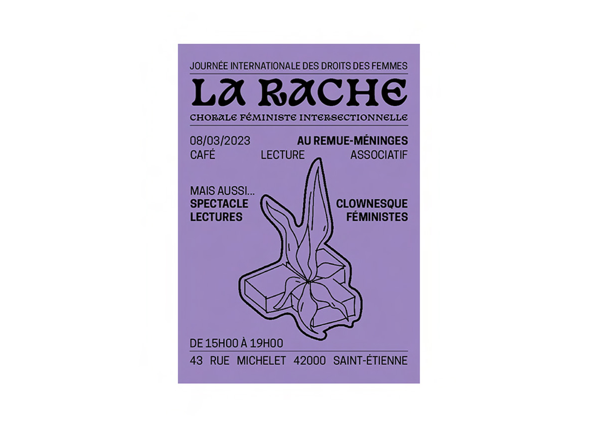

"La rache", dans le dialecte stéphanois, est un terme qui fait référence à la racine, mais il est aussi utilisé de manière métaphorique pour désigner une "mauvaise herbe". Ce terme évoque l’idée d’une plante indésirable qui pousse là où elle n’est pas attendue, comme entre les pavés ou dans des endroits inappropriés. Ce jeu de mots met en lumière la notion de quelque chose qui, malgré le souhait contraire, persiste et se développe dans des conditions non désirées.
Commanditaire : La Rache
Année : 2023
Missions : Identité visuelle, print